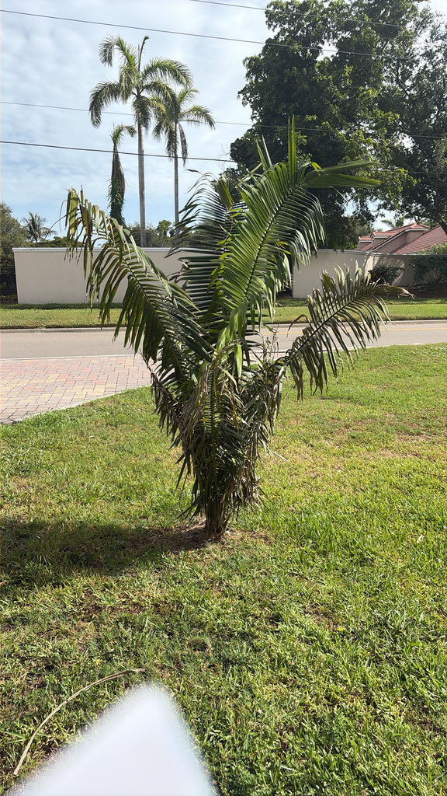

- Making palm wine from this species is a fatal, one-way transaction. In Colombia's Caribbean lowlands, traditional harvesters must fell the entire mature palm and cut a cavity directly into the heart of the trunk, collecting roughly a liter of fermenting sap a day for three weeks from a tree that will never grow again.
- The scale of this palm is genuinely monumental. A single mature crown can carry 30 to 40 arching fronds that each stretch up to 7 meters long — meaning a single leaf on this plant is long enough to rival the height of a two-story building.
- The compact seeds inside the fruit are powerhouses, packing 50 to 60 percent oil by weight. That density is why indigenous communities have harvested them for cooking oil and soap for centuries, in much the same way the African oil palm is utilized globally today.
- This species has endured a remarkable game of botanical musical chairs. Over the past two centuries, taxonomists shuffled it across at least three distinct genera — Cocos, Scheelea, and Attalea — leaving a trail of more than a dozen discarded scientific synonyms behind.
The American Oil Palm is native to a broad tropical arc stretching from southern Mexico through Central America and deep into northern South America, where it thrives in countries like Colombia, Venezuela, Ecuador, Peru, Bolivia, and Brazil. It dominates lowland ecosystems below 300 meters elevation, anchoring itself in humid forests, floodplain edges, and expansive river basins.
Highly opportunistic, this palm excels on disturbed and open ground. It frequently forms dense, single-species stands along shifting riverbanks, forest margins, and seasonally flooded savannas — a colonizing tendency that made it both highly visible and highly useful to the people living alongside it.
Introduced to Florida purely as an ornamental specimen, it is prized by collectors for its architectural grandeur and massive physical presence. It remains a well-behaved exotic with no tendency to naturalize or escape into local ecosystems, and it is completely absent from Florida's invasive plant registries.
- The genus name Attalea honors Attalus III, king of Pergamon in the second century BC, who was known as a scholar of medicine and botany. The species epithet butyracea comes from the Latin for 'buttery' or 'oily,' a direct reference to the oil-rich seeds inside each fruit.
- Despite its size, this palm carries a long human history of practical use. Researchers documenting its uses in Colombia recorded 36 distinct applications across eight categories — food, animal feed, medicine, construction, technology, and culture. The large fronds serve as durable thatch; the fibrous leaf bases yield rope material; and the hard endocarp of the fruit has been used as charcoal fuel.
- The fronds are remarkably durable building materials. The leaflets are waxy-glaucous on their undersides, giving them natural water resistance, and roofs thatched with properly harvested fronds are documented to last four years or more under tropical rainfall — a performance that made this palm one of the primary roofing sources across its entire range.
- Each developing flower stalk is sheathed inside a thick, rigid peduncular bract that completely encloses it until the flowers are ready to open. At that point the bract splits cleanly down one side, releasing the branched inflorescence — and the bract's split husk often remains visible among the leaf bases long after the flowers are gone, a useful thing to look for when examining the crown.
In its native range this is a genuinely productive wildlife tree. The inflorescences attract heavy insect traffic — photographs from the field show the male flower stalks swarming with bees and other pollinators.
The large, oil-rich fruits are fed upon by scarlet macaws (Ara macao) and other large birds and mammals; their tough, woody seeds require the kind of powerful beak or jaw that only specialist feeders can manage.
In Florida cultivation, away from the co-evolved fauna of tropical America, its wildlife value is more modest. Insects will visit flowers in bloom, and birds may investigate ripe fruit. It does not function as a larval host for any documented Florida butterfly or moth species.
The palm is monoecious — both male and female flowers are borne on the same tree, so a single plant can set fruit without a cross-pollination partner. Inflorescences are large, erect, and enclosed at first in a thick woody bract (the peduncular bract) that splits open as the flowers develop. The branched flower stalk carries up to 100 to 300 short branches.
Male flowers are pale yellow with six stamens; female flowers are cream-colored and somewhat larger. Bees and other insects are the primary pollinators.
The infructescence is large and pendant, bearing numerous tightly packed oval fruits 4.5 to 8.5 cm long and 2.5 to 4.5 cm in diameter, ripening from green to yellow-orange or orange-brown. Each fruit has a thin, fibrous, faintly sweet pulp layer surrounding a very hard woody endocarp that encloses one to three oil-rich seeds. The seeds are 50 to 60 percent oil by weight.
Pinnately compound and arching, reaching 6 to 7 meters in length. Each frond carries up to 200 leaflets per side; the leaflets are regularly arranged in one plane, narrow, and up to 160 cm long with conspicuous wavy cross-veins.
The leaf axis is notably twisted so that the distal portion of the blade stands nearly vertical rather than horizontal — giving the crown its characteristic 'shuttlecock' silhouette. A mature crown holds 15 to 35 fronds.
Solitary, cylindrical, and unbranched, reaching up to 25 meters tall in the wild and 30 to 55 cm in diameter. The upper trunk is often cloaked in persistent leaf-base stubs; lower down these fall away and leave a ringed, gray-tan surface. The trunk is thornless.
Stand back and look up at the skyline to find a silhouette that looks like a giant green shuttlecock or an exploding water fountain. Notice how the long, arching fronds don't lie flat — the main stem of each leaf is twisted, tipping the leaflets nearly vertical to give the crown its unique, architectural shape.
Next, peer into the center of the crown and look for the thick, cigar-shaped woody bracts tucked among the leaf bases; these are the protective casings that enclose each flower stalk before it bursts open, and split husks often linger there long after flowering is done.
Finally, take a look at the trunk itself, which can grow close to two feet thick and shows tight, smooth gray rings wherever the old rough leaf bases have dropped away.
The fruit pulp and oil-rich seeds are edible and have been eaten by indigenous communities across the palm's range for centuries, but preparation matters: the pulp is thin and fibrous, the endocarp is extremely hard, and the seeds are most often pressed for oil rather than eaten raw.
Palm heart (the growing tip) is also edible but harvesting it kills the tree, so it is not a practical food source here. No toxicity to people, dogs, or cats is documented. The trunk is thornless and the fronds carry no spines — this is a physically safe palm to walk around.
The American Oil Palm spends its early years as a stemless rosette with no visible trunk at all — a juvenile phase that can last many years. Visitors who see a young specimen may not recognize it as the same species as the towering adult nearby.
The common name 'American Oil Palm' is shared informally with other large Attalea species and should not be confused with the African Oil Palm (Elaeis guineensis), which is the species behind most of the world's commercial palm oil production. The two are unrelated beyond both being monocots in the family Arecaceae.


- © Ruby Meador (CC-BY-NC), via iNaturalist